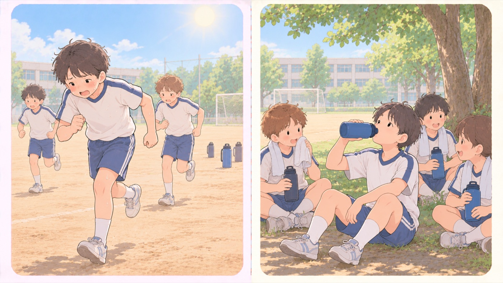

- すること：暑さ指数（WBGT）で活動の可否を判断する
31以上は運動を原則中止で、環境省が載せている指針は「特に子どもの場合には中止すべき」としています。28以上31未満でも激しい運動や持久走は中止し、10〜20分おきに休憩をとり、水分と塩分を補給します。 - すること：頭を打ったら、その日は必ず運動をやめる
すぐに症状が出ないことがあります。短期間に繰り返すと重症化します。 - すること：朝食と睡眠をとってから参加させる
寝不足と空腹のままだと熱中症になりやすくなります。 - しないこと：「水を飲むな」「気合でなんとかなる」を受け入れない
指導者がそう言っても従わせません。
雷鳴が聞こえたら
気象庁は「雷鳴が聞こえるなど雷雲が近づく様子があるときは、落雷が差し迫っています」としています。 部活動や川遊びの最中に判断するのは子どもの側なので、先に決めておきます。
- 危険なのは、グラウンド、ゴルフ場、屋外プール、堤防や砂浜、海上などの開けた場所と、山頂や尾根
- 比較的安全なのは、鉄筋コンクリートの建物、自動車（オープンカーは不可）、バス、列車の中
- 避難できないときは、高い木の幹・枝・葉から2メートル以上離れ、姿勢を低くし、持ち物を体より高く突き出さない
- 戻るのは、雷の活動が止んで20分以上たってから
「鳴ったら建物か車へ。止んでも20分」を、合言葉にしておきます。
🛍 グッズの選び方
PR- 携帯できる暑さ指数気温・湿度・日射などから算出する、熱中症の危険度の指標。WBGTとも呼ばれる。日本スポーツ協会の熱中症予防運動指針では、31以上で運動は原則中止、28以上31未満でも激しい運動は中止とされている。計で、その場の環境を数値で確認できます。
- 水筒は1リットル以上・保冷のものを選びます。足りないと我慢します。
- 経口補水液水分と塩分を吸収しやすい割合で配合した飲みもの。汗を大量にかいたときや、熱中症が疑われるときに使う。を常備します。大量に汗をかくと、水だけでは足りません。
- 黒球式 熱中症指数計（WBGT計・JIS準拠）黒球式・JIS準拠。暑さ指数をその場で測れるAmazonで見る →（新しいタブで開きます）
- BOTTLE BOTTLE ステンレス水筒 1L（保冷・ストロー）1L。1日分を持たせられるAmazonで見る →（新しいタブで開きます）
- 経口補水液 OS-1（300ml×12本）🏥 消費者庁許可 個別評価型病者用食品（第2020002号）Amazonで見る →（新しいタブで開きます）
- マジクール キッズ ネッククーラー📌 2005年発売。累計800万本以上Amazonで見る →（新しいタブで開きます）
- 日繊商工 キッズ クールタオル IC413水でぬらすだけ。外出先で足せるAmazonで見る →（新しいタブで開きます）
- まもる君 保冷剤付きネッククーラー（洗える）保冷剤式。冷たさが長くもつAmazonで見る →（新しいタブで開きます）
リンクはAmazonアソシエイトリンクです。当サイトはアフィリエイトプログラムに参加しています。Amazonのアソシエイトとして、当サイトは適格販売により収入を得ています。 選び方の方針
この項目の根拠
- 暑さ指数（WBGT）について ── 熱中症予防運動指針（環境省 熱中症予防情報サイト）（新しいタブで開きます）
日本スポーツ協会「スポーツ活動中の熱中症予防ガイドブック」（2019）の熱中症予防運動指針。暑さ指数31以上は運動原則中止（特別の場合以外は運動を中止する、特に子どもの場合には中止すべき）、28以上31未満は厳重警戒（激しい運動は中止、10〜20分おきに休憩をとり水分・塩分の補給を行う、暑さに弱い人＝体力の低い人・肥満の人・暑さに慣れていない人は運動を軽減または中止）。 - 雷から身を守るには（気象庁）（新しいタブで開きます）
雷鳴が聞こえるなど雷雲が近づく様子があるときは落雷が差し迫っていること。グラウンドやゴルフ場、屋外プール、堤防や砂浜、海上などの開けた場所や、山頂や尾根などの高いところでは人に落雷しやすいこと。鉄筋コンクリート建築、自動車（オープンカーは不可）、バス、列車の内部は比較的安全な空間であること。高い木の近くは危険であり、最低でも木の全ての幹・枝・葉から2m以上離れること。姿勢を低くして持ち物は体より高く突き出さないようにすること。雷の活動が止み、20分以上経過してから安全な空間へ移動すること。 - Vol.626 早めの熱中症予防! 症状が現れたら速やかな処置を!（消費者庁）（新しいタブで開きます）
早めの熱中症予防と、症状が現れたら速やかな処置をすること。 - 熱中症環境保健マニュアル「熱中症を疑ったときには何をするべきか」（環境省・PDF）（新しいタブで開きます）
熱中症を疑ったときの現場での応急処置として、風通しのよい日陰やクーラーの効いた室内等へ避難させること。軽症・中等症では涼しい場所に移し、衣服を緩め、水分と塩分を補給すること。皮膚を濡らしてうちわや扇風機で扇ぐ、氷やアイスパックなどで冷やすこと。前頚部の両側、腋窩部、鼠径部に広く当てて皮膚直下を流れている血液を冷やすことが有効であること。呼びかけや刺激に対する反応がおかしい、答えがない（意識障害がある）ときは誤って水分が気道に流れ込む可能性があるため、口から水分を飲んでもらうのは禁物であること。最初から症状が強い場合、嘔吐・吐き気などで水分補給ができない、処置をしても症状がよくならない場合には病院に搬送すること。